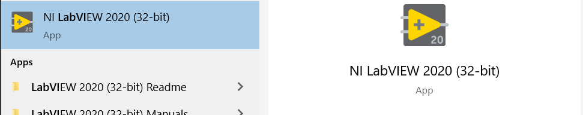
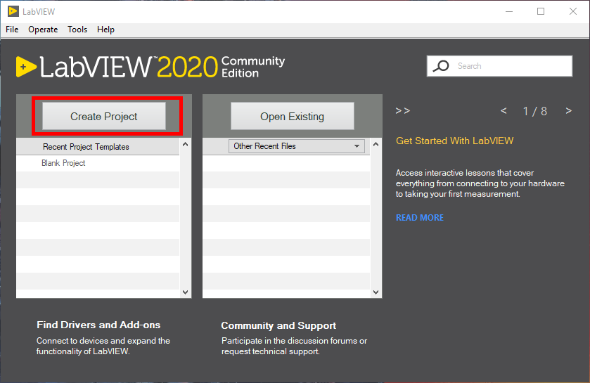
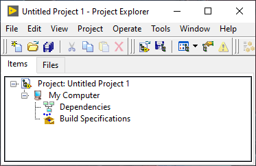
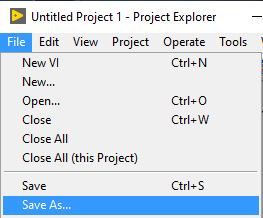

Creating a LabVIEW Project
Creating a LabVIEW for VMX project is very easy and quick to do.
Open LabVIEW 2020 Community Edition
Hit
Create ProjectSelect
Blank Projectthen hitFinish
A Blank Project should now pop up
Save the project to a location of your choice
Right-click on
Your Project Name.lvprojand selectNew->Targets and Devices...
Under Targets and Devices, select
New target or device, then under Targets and Device Types, select the drop-down forLINXand select theRaspberry Pi 2 B. HitOKwhen done.
Save the project, and the project is now wholly created.